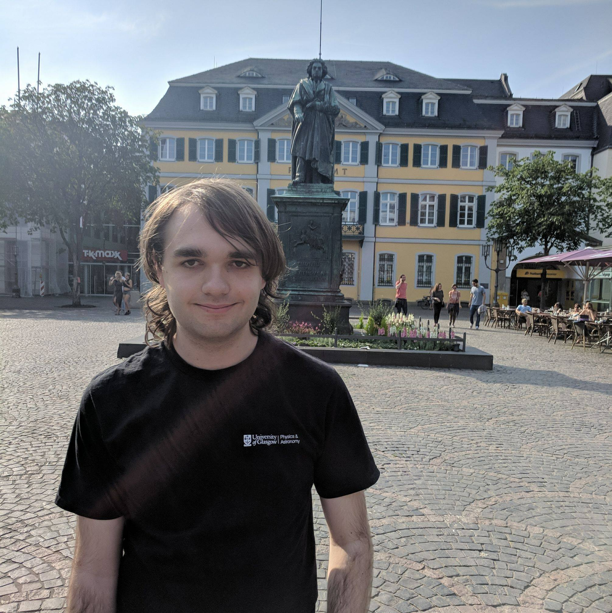

Postgraduate researcher at the University of Liverpool studying Theoretical Computer Science
Contact Information
|

|
I am a post-graduate research student at the University of Liverpool Department of Computer Science, in the algorithms and complexity research group. My PhD thesis is titled "Combinatorial analysis of the energy graphs under operations of composition", supervised by Prof. Igor Potapov, with secondary supervisors Matthew Dyer and Vladimir Gusev. I am currently funded by the Leverhulme Research Centre for Functional Materials Design. Previously, I completed my undergraduate studies at the University of Glasgow, with my masters project supervised by David Manlove. My full CV is available here.
Combinatorics on words:My interest on combinatorics on words has been primarily motivated on representing real world objects within a discrete space. In particular, I am been interested in capturing symmetry on words, such as reflective and, in the multidimensional setting, translational symmetries. Going forward I would like to extend more results from one dimension into the multidimensional setting.
k-centre problem for implicitly defined objects (such as graphs and words): Many classes of combinatorial objects can be represented as a weighted graph using some similarity measure to assign weights to the edges. For large graphs, for instance the set of all words of length n, generating the whole graph is impractical. To this end, we seek to take a set of representative samples from the graph. The idea behind the k-centre problem for implicitly defined graphs is to take k samples from some graph that allow the local properties to be determined. At present I have worked this problem for (multidimensional) words, using the overlap distance between subwords as the distance. Going forward I would like to study more complex objects.
Crystal Structure Prediction: During my PhD I have focused on the problem of predicting the structures of Crystals from first principles. My main results has been on the hardness of this problem, and more recently on approaches to solving similarly motivated problems. Move forward I would like to show undecidability for the general version of this problem
Temporal Graphs: I have recently began working on the problem of harmonious colourings in the setting of temporal graphs. The initial results have shown that this is a highly challenging problem even when the underlying graph is a path. The next steps in the project would be to look at solutions to this problem when each time step has been solved.
Stable Matchings: During my Masters (dissertation is available here), I worked on the stable matching problem for incomplete lists with ties. My main result was providing new bounds on the number of blocking pairs for maximum matchings in this setting. Moving forward I would be interested in obtaining similar results for more complex settings such as the kidney exchange problem.
| dblp link | ||
| On the Hardness of Energy Minimisation for Crystal Structure Prediction. | SOFSEM 2020 | arXiv link |
| Ranking Bracelets in Polynomial Time. | CPM 2021 | arXiv link |